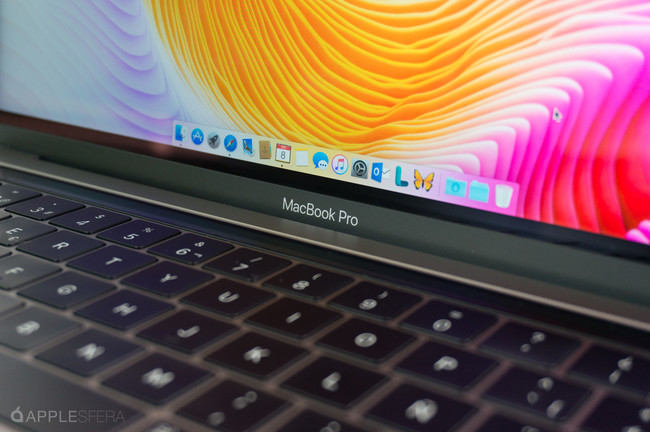

Diez años de teletrabajo
Tras diez años de teletrabajo, esto puedo decir sobre los mitos y realidad de trabajar desde casa.

Octava beta de macOS Sierra
¡Betas! La octava de macOS Sierra 10.12.4 y la séptima de watchOS 3.2 ya disponibles.

Séptima beta de iOS
Apple lanza la séptima beta de iOS 10.3 y macOS 10.12.4 para desarrolladores.